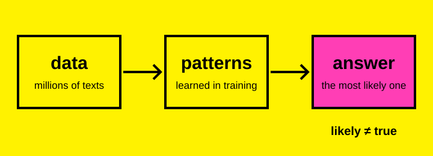

ai takes over
prediction AI is integrated into our lives 100%. It writes for us, decides for us and thinks for us, and we can’t do much without it.
A student’s guide to what artificial intelligence is, what it’s good for and what it might be doing to us.
I use AI for university almost every day, so I wanted to understand what it actually is, why it’s useful and why it also worries me. Each point is labelled as a fact with a source, my view, or a prediction.
fact The OECD describes an AI system as a machine that takes the input it receives and works out how to produce outputs such as predictions, content, recommendations or decisions (OECD.AI).
fact Most AI we use today is “machine learning”. Instead of following rules written by a programmer, it is trained on huge amounts of examples and learns patterns from them. Chatbots like ChatGPT learned patterns from enormous amounts of text, so they can predict which words should come next.

my view In simple words, AI is a very good guesser. It doesn’t “know” things the way people do; it gives the answer that sounds most likely.
my view For simple, basic facts, like a definition or a quick refresher before class, AI gives an answer in seconds instead of making me dig through ten websites.
my view It helps me organise assignments: breaking a big project into steps, planning a schedule around deadlines and turning messy notes into a clear to-do list.
my view AI has become really good at creating texts and essays. It helps with a first draft, rephrasing a confusing sentence or getting feedback on structure and grammar.
fact A 2024 UNESCO study of popular language models found clear bias against women: female names were linked to words like “home” and “family”, male names to “career” and “business” (UNESCO/IRCAI).
fact AI can also invent things. In 2023, lawyers in New York submitted court cases that ChatGPT had made up, and a judge fined them $5,000 (court order).
my view That’s why you always have to double-check sources.
fact In 2024, an employee at the engineering firm Arup in Hong Kong joined a video call with what looked like his bosses. Every one of them was a deepfake. He sent about US$25 million to scammers (ITV News).
my view AI is becoming dangerous: it can create fake news and fake photos and videos of real people, which makes misinformation easier to make, harder to spot and faster to spread.
fact In a 2025 MIT Media Lab study, 54 people wrote essays with ChatGPT, with Google or with no tools. The ChatGPT group showed the weakest brain engagement and struggled to quote their own essays. The study is small and not yet peer-reviewed (MIT Media Lab).
my view Students are becoming dependent on AI and thinking less with their own brains. That worries me.
prediction Nobody knows exactly what happens next. We can picture it negatively or positively. Pick one:
prediction AI is integrated into our lives 100%. It writes for us, decides for us and thinks for us, and we can’t do much without it.
prediction We use AI for the things it’s good at and learn to control ourselves, and it, so it doesn’t consume our lives.
fact AI runs in huge data centres. The International Energy Agency expects their electricity use to more than double by 2030, to more than Japan uses today, which can mean more emissions (IEA).
prediction If clean energy doesn’t keep up, AI’s growth could also become a risk for the climate.
I chose the visual style based on some album covers I’ve seen and was inspired by: bright neon backgrounds and simple lowercase text. I thought it would look appealing to a younger, student audience.
The page uses semantic HTML (header, nav, main, section, footer) so it’s easy to navigate with a screen reader. In the CSS, each section is a full-width block of one neon colour, stored as variables so the palette stays consistent. I used Arial, a simple system font that loads instantly, and checked that black text has strong contrast on every colour. The two images are SVG files with alternative text. A small JavaScript switch lets readers flip between the two futures; without JavaScript, both are shown.
I was assisted by AI: I used Claude (claude.ai) to help write the text and code and to find sources. I checked the facts against the sources, edited the content and tested the site on desktop and mobile. The final work is my responsibility.